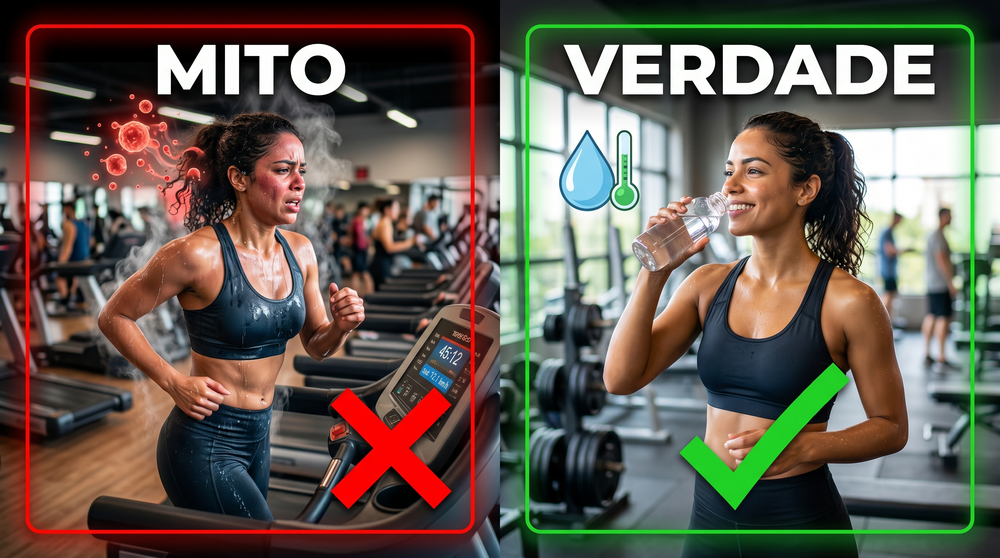

Primeiros passos para sair do sedentarismo.
Passar o dia parado cria um problema silencioso no seu corpo:
Mudanças incríveis já nas primeiras semanas:

Índice de Massa Corporal padrão da OMS.
Necessidade diária baseada no peso corporal.